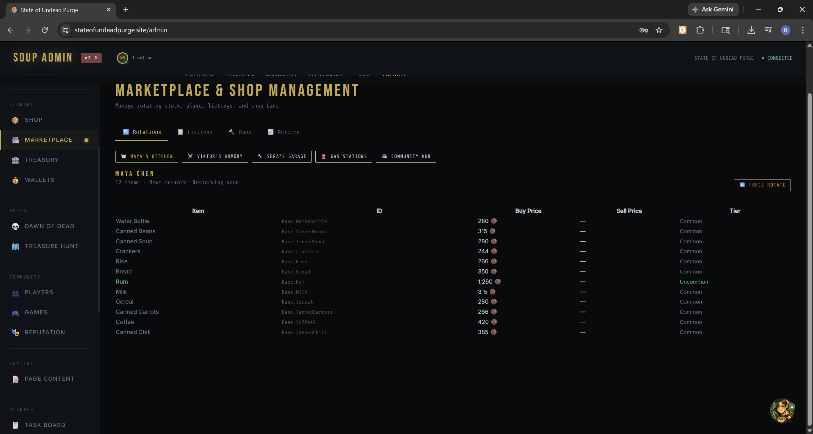
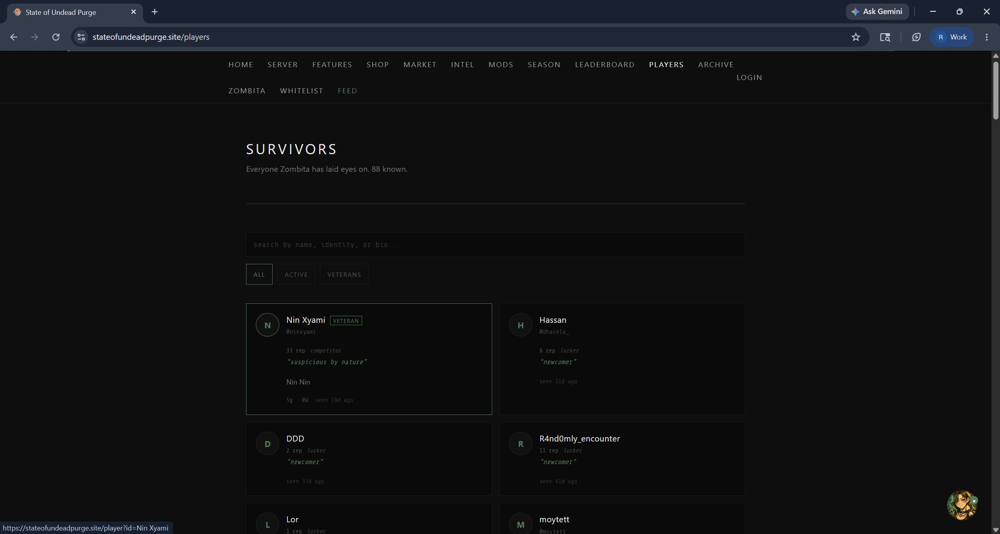

The shop network
The clearest demonstration of cross-runtime sync is the shop system. Eight named NPCs run shops with rotating stock. Stock can be edited from the admin panel, viewed publicly on the website, and bought from in-game.

Marketplace & Shop Management. Five rotating shops, dynamic pricing, force-rotate controls, ban management. The same data feeds the public shop page and the in-game dialogs.

Public-facing shop network. Same backend, different surface. Players check restock timers from the web before logging into the game.

The same shop, in-game. The player right-clicks an NPC, this dialog opens, and the stock listed is whatever the backend says it is at this moment.
Why this matters: any one of these screenshots is a screenshot of a web app, a game UI, or an admin panel. Together they're a screenshot of the same thing, rendered three ways. That is the entire point of Soup as a platform.